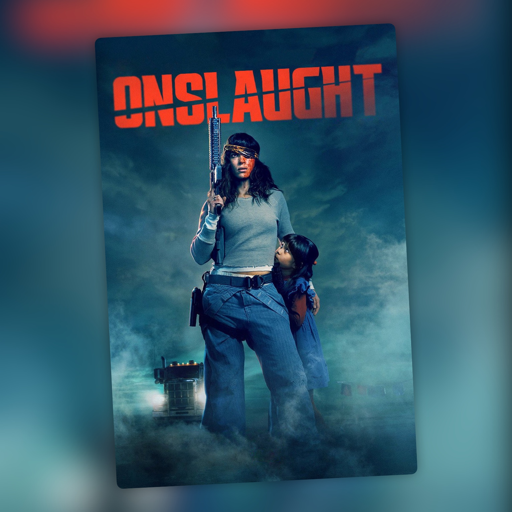

Aniquilación (2026)
Una vuelta al cine de género que no termina de funcionar

Adam Wingard llevaba casi una década trabajando con propiedades ajenas. Después de The Guest (2014) llegaron Blair Witch, Death Note y las dos películas de Godzilla y Kong, grandes producciones de Hollywood. Él mismo ha contado que en ese terreno había tocado techo y que necesitaba una historia más personal, algo que dejara claro cuál es su estilo como director. Aniquilación es esa vuelta al cine de género que le dio a conocer, y vuelve a juntarle con Simon Barrett, el guionista de Tú eres el siguiente y The Guest. Tiene bastante de esa serie B que ambos manejaban tan bien. El problema es que esta vez la mezcla no acaba de funcionar.
La protagonista es Celeste (Adria Arjona), una exfrancotiradora del ejército que vive con su hija en una caravana y tiene problemas con su expareja por la custodia de la niña. El típico recurso de la madre que tiene que proteger a su hija mientras intenta resolver sus propios problemas familiares. Un punto de partida bastante visto, aunque Arjona tiene presencia suficiente para llevar el peso de la película y convertirse en una heroína de acción capaz de enfrentarse a cualquiera.
Todo se complica cuando un grupo de supersoldados modificados genéticamente escapa de una instalación militar y empieza a sembrar el caos en la zona. Son tipos enormes, silenciosos y prácticamente imparables, con una apariencia que recuerda bastante a Jason Voorhees y compañía. La película mezcla entonces el asedio de una comunidad aislada con el slasher, mientras Celeste intenta proteger a su hija y a los vecinos que se cruzan en su camino.
Wingard ha explicado que todo parte de John Carpenter, sobre todo de Asalto a la comisaría del distrito 13, y del primer James Cameron, con Terminator a la cabeza. Para los asesinos se fijó en La niebla, también de Carpenter, y con Barrett tomó Tremors como modelo para que ningún personaje secundario estuviera de relleno. Sobre el papel suena bien, y se nota que Wingard disfruta volviendo a este terreno después de tantos años con franquicias.
La relación con The Guest va más allá del tono. Wingard ve Aniquilación como el cierre de una especie de trilogía con Tú eres el siguiente y The Guest. La historia transcurre en el mismo pueblo que The Guest y Dan Stevens ha dicho que comparten universo. No es una secuela ni recupera a sus protagonistas, así que no hace falta haberla visto para seguir esta, aunque es un detalle que gustará a quienes recuerden la anterior colaboración entre Wingard y Barrett.
Stevens repite con el director después de The Guest y Godzilla y Kong: El nuevo imperio, esta vez en un papel secundario como Hans Kammler, un científico nazi con aspecto de mad doctor que parece salido de otra película. Tiene una caracterización bastante pasada de vueltas y es uno de esos personajes que llaman la atención cada vez que aparecen, aunque me habría gustado que tuviera más espacio. También están Rebecca Hall, Drew Starkey, Michael Biehn y Eric Wareheim, además de Reginald VelJohnson, nuestro querido Carl Winslow de Cosas de casa, que aquí tiene ocasión de pegar unos cuantos tiros.
Uno de los problemas de la película es que quiere ser muchas cosas a la vez. Por un lado tenemos a una mujer durísima que puede cargarse a cualquiera que se le ponga delante; por otro, unos asesinos que parecen sacados de un slasher; y en medio, un científico nazi, experimentos militares y una comunidad de personajes bastante peculiares. Hay momentos que prometen mucho, pero la película no encuentra el equilibrio. La acción y el terror no siempre encajan, y no consigue sacar partido a todo lo que pone sobre la mesa.
Me quedo con la sensación de que Wingard tenía ganas de volver a hacer este tipo de cine, pero esta vez no ha encontrado una historia a la altura de sus ideas. Adria Arjona funciona como heroína de acción, Dan Stevens se lo pasa en grande con su personaje y siempre es agradable encontrarse con Carl Winslow repartiendo tiros. Pero la mezcla de mujer invencible y slasher no termina de cuajar. Si lo que buscaba era volver a hacer algo como The Guest, esta vez se ha quedado bastante lejos.
Ficha técnica
- Título original: Onslaught
- Dirección: Adam Wingard
- Guion: Simon Barrett y Adam Wingard
- Reparto principal: Adria Arjona, Dan Stevens, Reginald VelJohnson, Eric Wareheim, Rebecca Hall, Michael Biehn, Alex Pereira y Drew Starkey
- Año: 2026
- Duración: 92 min
- Estreno en España: 30 de octubre de 2026, en cines